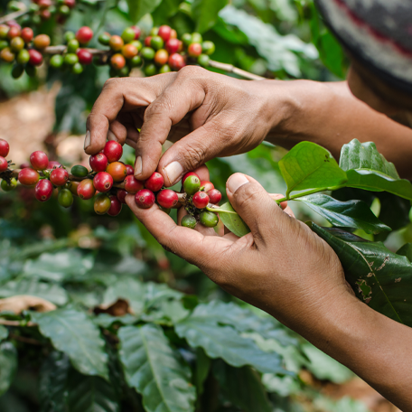

Our country took a turning point in the last decade of the 18th century with the start of the coffee industry. And if you have ever wondered “why 1820?” the answer is in the year we exported our first “golden bean” to Panama. Since then, part of the Costa Rican economy has revolved around the production and consumption of the very best coffee.
At present, some 93,000 hectares are dedicated to coffee growing. Our wide variety of soils, altitudes, and climates has led to the adaptation of different plant varieties to the highlands – like what has happened with Cafe 1820’s coffee, which grows at intermediate altitudes of 1,100 meters above sea level to satisfy the most demanding tastes.